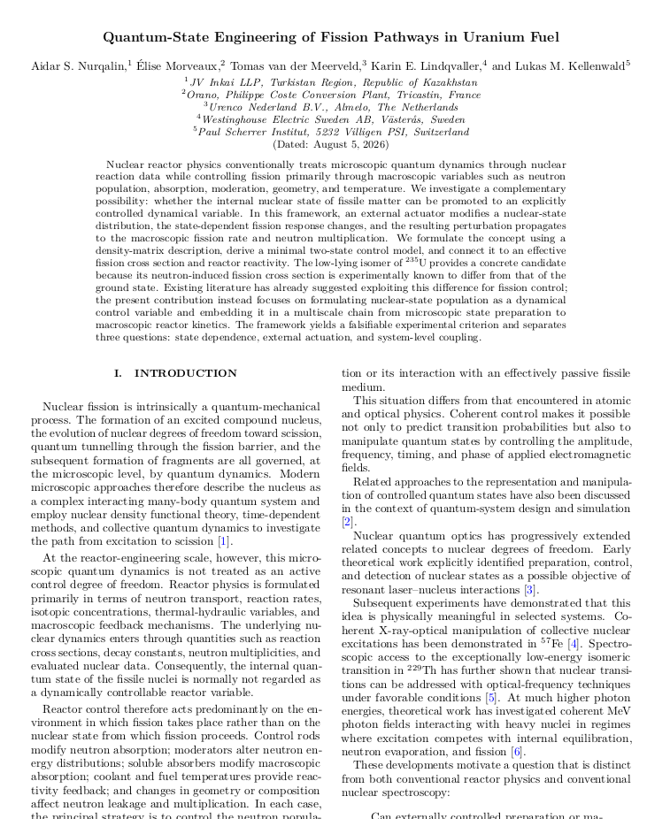
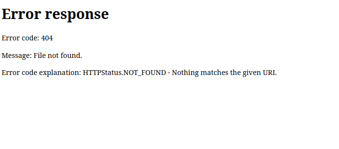

C-Not Quantum Reactor
by Francesco Sisini, 2026
Principali criticità individuate dai partecipanti
Approvvigionamento di uranio
I fornitori hanno sottolineato la necessità di una domanda prevedibile
e di impegni contrattuali di lungo periodo per sostenere nuovi investimenti
nelle attività estrattive.
Conversione
Gli operatori del settore hanno indicato nell'incertezza sui volumi futuri
uno dei principali ostacoli agli investimenti in nuova capacità e in processi
di conversione alternativi.
Arricchimento
I fornitori di servizi di arricchimento hanno evidenziato i lunghi tempi
necessari per autorizzare, finanziare e realizzare capacità destinate
a combustibili di nuova generazione.
Fabbricazione del combustibile
È stata richiamata la necessità di sottoporre nuovi materiali, composizioni
e processi produttivi a programmi completi di qualificazione prima del loro
impiego in reattori commerciali.
Ricerca e validazione
I rappresentanti degli istituti di ricerca hanno sottolineato che tecnologie
basate su nuovi principi fisici o su fenomeni non ancora sufficientemente
caratterizzati richiedono una preventiva validazione sperimentale
e indipendente.
Sintesi generata mediante IA a partire dagli atti della conferenza.
«A cosa stai pensando?»
«Che l'Uranio in fondo è davvero stabile.»
«Stai scherzando?»
«No piccola. Se hai due atomi di Uranio devi aspettare cinque miliardi di anni per vederne decadere uno. Ti sembra instabile?»
«Non intedevo questo. Voglio sapere se davvero pensavi all'Uranio! In un momento simile?»
«Tesoro. Penso sempre all'Uranio. È il mio lavoro.»
«Quanto starai via questa volta?»
«Poco, qualche giorno. Al massimo una settimana.»
Non gli fa altre domande. Si gira nel letto, dandogli le spalle.
Lui le sfiora la schiena con il polpastrello dell'indice. Percorre lentamente la sua spina dorsale, seguendo il profilo ondulato delle vertebre. Quando il dito arriva alla lordosi lombare, lei scatta e si volta verso di lui.
«Avevi promesso...» gli ricorda. «Basta radiazioni.»
«Ho con me il dosimetro, stai tranquilla.»
«Adesso hai delle responsabilità. Non sei più...»
Si ferma prima di completare la frase.
«Lo so. Non rischierò nulla che non sia necessario.»
E poi tra dieci giorni c'è il compleanno.»
«Ho detto al massimo una settimana. Ci sono ancora tre giorni di margine.»
Laura dorme nella camera accanto. Non sente i genitori parlare.
Tra poco sarà il suo compleanno, il sesto. Lei e la mamma hanno già iniziato i preparativi, per non farsi sorprendere a due giorni dalla festa con ancora tutto da fare.
La vigilia sarà il momento culminante, quando prepareranno insieme la torta con la frutta fresca. Una tradizione che ha già tre anni di storia. Fin lì arrivano i suoi ricordi.
Il papà è sempre preso dal lavoro e non partecipa mai. Così, se tutto andrà bene e tornerà in tempo, Laura quasi non si accorgerà nemmeno di quest'ultima missione.
Il CEO lo riceve personalmente. Lo prega di accomodarsi. Si inchina.
«Prego.» Gli offre un sigaro.
«Accetto volentieri.»
«Sono stato informato...»
Tentenna un attimo, poi riprende.
«Ma la prego, mi spieghi lei in prima persona che cosa sta preoccupando l'Euratom.»
Gli sorride, poi mostra il sigaro che ha appena ricevuto. Il CEO glielo prende dalle mani, ne taglia la cima con una ghigliottina e glielo restituisce. Ripete l'operazione con il proprio. Dalla scrivania prende un grosso accendino di cristallo e li accendono insieme.
«È stata pubblicata una ricerca piuttosto innovativa sulla fissione.»
Il CEO annuisce. «Ne sono informato.»
«Uno degli autori riporta proprio la JV Inkai LLP come affiliazione.»
«Ma qui non ha mai lavorato», conclude il CEO.
«Molto strano. Ha letto l'articolo?»
«No, lo hanno letto per me. Il fatto è che, in appendice, ci sono due tabelle...»
Si interrompe e lo guarda. L'altro rimane in silenzio.
«Due tabelle che non dovrebbero essere pubbliche.»
«I dati?»
I dati. Stesso protocollo, stesso risultato.
Lo lascia parlare.
«Quei dati non possono provenire che da qui.»
Il CEO non si muove. Annuisce appena e inspira una lunga boccata dal sigaro.
«Siamo a disposizione. Può controllare tutto ciò che ritiene necessario. Domani un nostro vicepresidente sarà con lei per ogni verifica.»
«Avrò bisogno di ispezionare anche gli impianti se possibile», conclude.
Il tecnico gli porge il dosimetro.
«Lo riconsegna all'uscita.»
Sono le uniche parole di spiegazione, anche troppe per un uomo del Kazakhstan.
L'ispezione procede senza intoppi. La discrepanza sull'uranio estratto e quello riestribuito ha una spiegazione. Il tutto si conclude in giornata.
Nel primo pomeriggio, al check-out, riconsegna l'elmetto protettivo, i guanti e la tuta. Infine il dosimetro. Il CEO prende l'impegno di riesaminare le due campagne da cui provengono quei dati.
La sera in albergo controlla i dati sulla sua scheda personale. La dose di radiazioni assorbita non è significativa, ma il suo dosimetro personale riporta dei valori diversi.
Passa all'analisi temporale. Le dosi assorbite durante l'ispezione coincidono. È stato prima che ha assorbito troppa dose. Ma quando?
Controlla i grafici.
Ecco, 60 ore prima. C'è un picco di assorbimento.
Chiude il computer, chiama casa.
«Ciao, come stai? Tutto okay?»
«No. Fai come ti dico. Prendi Laura, fate la doccia. Non meno di 20 minuti.»
«Ma cosa succede?»
«Ascoltami, non sono sicuro, ma temo ci sia stata una contaminazione. Ora ascoltami. Dopo la doccia, uscite senza vestirvi, raggiungete la casetta. Nel mobilietto c'è un Geiger. Controllatevi, poi mi richiami.»
Attende seduto sul letto.
Venti minuti passano in fretta.
«Pronto, allora?»
«Nulla, solo il fondo.»
Una lacrima lascia il suo occhio, contro la sua volontà.
«Va bene. Forse è un falso allarme. Per ora state lì. Monitoriamo le cose. Ma, ascoltami. Lo so che dovete prepararvi. Ma se ci fosse...»
«Sì, ho capito, hai ragione. Ma tu stai bene?»
«Stai tranquilla. Risulta un piccolo sovradosaggio, ma deve essere stato un artefatto.»
«Devi tornare ancora nell'impianto?»
«No, qui ho finito. Domani vado a Philippe Coste. Al Philippe Coste, nel Tricastin. L'altro ricercatore risulta un loro affiliato. Comunque, meglio cambiare discorso. Vai da Laura adesso, ti chiamo domani.»
Soprassediamo ai saluti alle smancerie. Arriviamo al punto, perché al Philippe Coste l'enigma degli autori si complica anziché risolversi.
Il nome riportato sull'articolo corrisponde non ad un ricercatore, ma alla figlia di un'ingegnera dell'area di conversione dell'uranio.
Quando arriva al centro, non gli fanno perdere tempo.
«Abbiamo fatto i compiti. Prendiamo le cose seriamente qui», sorride.
«Il nome dell’autore coincide con quello della figlia di una nostra ingegnera, ma...»
Attende, sorride di nuovo, questa volta senza mostrare i denti.
«Ha solo sei anni.»
Pensa Laura. Anche lei ha sei anni.
Non reagisce, non esprime sorpresa. Attende una ripresa del discorso, che arriva in un attimo.
«Mi spiace che si è dovuto venire fin qui, ma le assicuro che lo abbiamo scoperto anche noi per caso, e io sono stato informato questa mattina, due ore fa.»
«Davvero una strana coincidenza.»
Attende, sorride a sua volta.
«Quindi mi dica, cosa possiamo fare ancora per lei?»
Fruga nelle tasche, trova una gomma, ne offre una, che viene cortesemente rifiutata.
«Io sarei anche a posto.»
Scarta la gomma e se la infila in bocca.
Che tipo, potrebbe quasi sembrare prepotente. Ma seguiamo il discorso ed evitiamo i giudizi.
«Ma non posso dire lo stesso dell'Euratom.»
Appoggia la carta della gomma sulla scrivania.
«La tecnica di conversione», spiega.
Fa di nuovo una pausa, prende la carta dalla scrivania, la apre, si toglie la gomma dalla bocca e la cartoccia.
«Dicevo, non coincide con quella dichiarata nella documentazione dell'impianto.»
«Capisco, per questo ha richiesto un lasciapassare per l'impianto.»
«Esatto, sono qui anche per questo.»
«Proceda come deve. Comunque il “papà” dell’autore non ha gradito di trovare il nome di sua figlia sull’articolo. Ha chiesto l’autorizzazione a effettuare personalmente una verifica tecnica della procedura descritta. Al momento è anche l’unico qui con le competenze necessarie.»
«Ecco, dottore, questo è l'impianto. Questo è il reattore a fiamma. Entra UF4 ed esce UF6. Non abbiamo altro. L'attività in entrata e in uscita è campionata ogni trenta secondi. Può consultare i dati senza limitazioni temporali. Abbiamo tutto dal 2012.»
Completano l'ispezione.
Non c'è traccia del letto fluidizzato.
Se i dati cumulati di attività corrispondono con l'uranio ricevuto, anche il Philippe Coste sarà un capitolo chiuso.
«Come state?»
«Bene. Laura è entusiasta, sai com'è fatta.»
«Sono contento. Tu sei un po' sacrificata. Hai tutto?»
«È più facile che in casa, stai tranquillo. Poi la stagione aiuta. Tu? Hai fatto qualche prova con la gomma?»
«Sì, tutto regolare. Il dosimetro non ha riportato sovradosaggi. Negativa anche la prova con la saliva.»
«Quindi?»
«Non lo so.»
«Domani dove sei?»
«Urenco.»
«Hai un volo diretto?»
«Sì, dovrei essere ad Almelo, nell’Overijssel, alle 11.»
Alle 12 è nell'ufficio del responsabile di processo.
Alle 14 sta visitando l'impianto di arricchimento.
«Nulla di strano. Quindi non esiste una linea di arricchimento sperimentale?»
«No, queste sono le sole linee di arricchimento che gestiamo qui.»
«E immagino che la distribuzione degli isotopi sia quella già certificata, giusto?»
«Noi certifichiamo il titolo in uranio 235. Il resto del vettore isotopico non rientra normalmente nella specifica commerciale.»
«Non è una norma tassativa, però la distribuzione isotopica dovrebbe accompagnare le forniture.»
Ascolta. Per qualche secondo non replica. Telefona: «Inserite il vettore isotopico completo nel piano di caratterizzazione dei prossimi lotti.» Si salutano.Non prenota un albergo.
Sono passate solo quattro giorni. Se riesce a giungere Västerås prima di domani, potrebbe avvantaggiarsi di un giorno.
Atterra alle ventidue. Chiama a casa.
Laura è già a letto. Hanno passato la serata a giocare con gli zampironi.
Non va bene toccarli, lo sa. Ma sempre meglio del plutonio.
«Si accomodi.»
La direttrice dell'impianto è anche una docente di ingegneria dei materiali e l'ha già conosciuta a un congresso.
«Per fortuna è arrivato in anticipo, altrimenti non mi avrebbe trovata. Sono stata convocata d'urgenza a Bruxelles.»
«Buongiorno, professoressa. Lei ha già risposto a molti punti dell'agenzia, ma...»
«Prego, mi dica.»
«Nell'articolo sono descritte con precisione le misure di coerenza sulle pastiglie.»
«Noi non produciamo pastiglie con quella tecnologia. Non so come...»
Si ferma.
«E neanche chi abbia potuto descrivere una procedura che non esiste ancora.»
«Ma potrebbe?»
Attende.
«Potrebbe esistere, intendo?»
La professoressa lo fissa negli occhi.
«Non lo so. Non lo so. Se è stato accettato per la pubblicazione, qualcuno avrà verificato almeno il razionale. Io non sono un ingegnere quantistico.»
Stringe le labbra. Non le risponde.
«Posso visitare l'impianto?»
«Temo che non le sarà possibile, ma la farò parlare con gli ingegneri.»
«Cosa lo impedisce?»
«La sua dosimetria personale ha superato la soglia operativa prevista per l’accesso all’impianto.»
Non chiede spiegazioni. La direttrice non lo prenderebbe in giro. Nessuno prenderebbe sottogamba un membro dell'Euratom.
L'inconveniente ha comunque un ritorno positivo.
Nessuno degli ingegneri è autore del paper, ma uno di loro ha qualcosa da dire.
«Ho fatto qualche prova modificando il processo di sinterizzazione.»
Gli mostra i suoi appunti.
«L'articolo sembra riferirsi ai miei metodi. Ma io non ho pubblicato nulla.»
«La sua ricerca era autorizzata?»
La domanda è pertinente, perché il materiale radioattivo non può essere disposto senza autorizzazione.
«Non formalmente. Ho modificato alcuni parametri all'interno della finestra di processo su pastiglie destinate alla caratterizzazione. Nessun materiale è stato immesso nella produzione.»
«Quindi i risultati pubblicati sono veri?»
«Abbiamo ottenuto sostanzialmente quel risultato, sì.»
«Forse sarebbe il caso» non termina la frase.
«Si, rifaremo i test in modo corretto, formalizziamo la procedura di sinterizzazione e ripetiamo le prove sotto garanzia della qualità.»
«Bene.» Si salutano
«Come state?»
«Bene, mi manchi.»
«Anche voi.»
«E io?»
«Sì, anche tu.»
«Hai finito?»
«Quasi.»
«Domani a Villigen, poi?»
«Poi è fatta.»
«Non devi riferire a nessuno?»
«Sì, ma mi sbrigherò in mattinata.»
«Tornerai presto?»
«Certo, buonanotte.»
In Svizzera le cose vanno diversamente.
Nessuno lo aspetta al PSI. Sembrano non preoccuparsi della sua presenza.
Le guardie di sicurezza lo identificano, gli danno un badge di cortesia e lo lasciano entrare.
Ma nessuno l'accoglie. Nessuno lo cerca.
Il panel del research committee elenca oltre dieci nomi. Il primo è quello del presidente.
Il suo ufficio non è lontano, solo due building.
Bussa alla porta.
Il presidente in ufficio lo fa entrare. Si presentano.
«Non ho preso contatti personalmente, lo ha fatto l'Euratom. Ma mi aspettavo di essere su una warning list.»
Il presidente ascolta. Si toglie gli occhiali e li pulisce rapidamente.
«Certo, ha ragione, ma mi coglie completamente alla sprovvista. Lei è un funzionario dell'agenzia ed è qui per?»
«È stato pubblicato un articolo su una possibile tecnologia quantistica per controllare i canali di fissione dell'uranio.»
«Non l'ho ancora visto. Chi sono gli autori?»
«È pubblico da dieci giorni: come nota tecnica del CERN. Ma gli autori non sembrano corrispondere a persone esistenti.»
«Molto strano.»
Attende un attimo.
«E come è coinvolto il PSI?»
Il cellulare suona.
È sua moglie.
«Non trovo più Laura.»
Possiamo stare tranquilli.
Mentre era in giardino a giocare con il cane, lui si è allontanato, seguendo un fagiano.
Laura lo ha chiamato e rincorso.
Dopo 1.500 metri, si è trovata di fronte a un palazzo abbandonato.
Ciccio si è fermato, si è sdraiato a terra: esaurito il fiato. Laura lo ha afferrato per il collare e riportato a casa, ignara che non si fanno queste cose a sei anni.
«Da quanto non la vedi?»
«Sarà mezz'ora, ero entrata a prendere dei piatti.»
«Era meglio non entrare. Ok, ne parliamo dopo. Stai tranquilla. Nel garage c'è il drone di sorveglianza, l'ho lasciato carico. Vai lì per piacere.»
Attraversa il giardino, raggiunge il garage:«Ci sono. Ecco l'ho visto.»
«Bene, attivalo.»
«Fatto, c'era un app per controllarlo vero?»
«Si, aprila.»
Non risponde subito.
«L'hai aperta?»
«Aspetta. Non la trovo...»
«In ordine alfabetico, la trovi subito.»
«Ma non c'è. Forse...»
«Forse cosa?»
«Ho tolto alcune app per fare spazio.»
«Ok, non agitarti. Accendi il computer accanto al caricatore. Apri il browser e vai su localhost.»
«Localhost? dove? cosa devo..., aspetta.» La voce trema, poi sente solo una corsa frenetica e le urla di Laura: «Aiuto papà, la mamma mi...»
Riaggancia: «Mi scusi, emergenza rientrata.»
«Non si preoccupi, ho due nipotini terribili. Piuttosto, ho visto la ricerca. Sarebbe un risultato notevole. I paper citati sono di gruppi molto solidi e a grandi linee mi sono noti, ma non avevo ancora sentito di queste possibili applicazioni.»
Riapre l'articolo sul monitor.
«Sa cosa? Lo condivido con il mio gruppo. Proviamo a riprodurre il calcolo con i nostri modelli. Così almeno possiamo escludere qualche errore grossolano prima di romperci sopra la testa o sfondare una porta aperta.»
«Mi sembra ragionevole.»
Anche la visita al PSI si conclude senza nuovi elementi. Ma con un nuovo sospetto: forse, oltre agli autori, non esisteva neanche l'articolo. Presto avrebbe fatto chiarezza.
Tra pochi giorni Laura compirà dieci anni.
Nella piccola tiny house, sta preparando i bigliettini di invito per i suoi amici.
Suo padre è tornato a casa da un giorno, in tempo per aiutare lei e la mamma con i preparativi.
«Com'è andata?», le ha chiesto quando è arrivato.
«Bene, papà», gli ha risposto, «e tu?».
«Sono stata promossa», era una sorpresa che aveva tenuto calda per il suo rientro.
«Quindi?», gli chiede la moglie, appoggiando la valigia.
«Quindi, quando Laura sarà un'ingegnere, potrà raccontare che se non fosse scappata di casa con Ciccio, non avremmo avuto le centrali di quinta generazione».
Laura ride, ma ormai ricorda poco di come andarono davvero le cose quattro anni fa.
Quattro anni prima.
Era già in Svizzera. In tre ore fu al CERN e fecero la prova.
L'articolo era disponibile integralmente in PDF al seguente URL:
https://cds.cern.ch/record/125512
Lo aprirono nel browser.

Era proprio quello: stesso titolo, stesso contenuto, stessi autori.
Ora voleva verificare che quel PDF esistesse davvero sul server. Individuarono il servizio che interrogava direttamente il repository e lo aprirono dalla macchina che lo eseguiva, bypassando il router.
https://localhost:8080/record/125512

Ripeterono la prova.
Chiamò il suo ufficio.
«L'articolo non esiste. Non sul server. Viene prodotto dal software di routing, o da qualcosa che lo controlla.»
«Quindi? Cosa significa?»
«Che... non lo so.»
Quattro anni dopo.
Stato di avanzamento dei principali elementi della filiera
Approvvigionamento di uranio
Il riesame delle campagne estrattive pregresse ha consentito di individuare
condizioni operative associate a un miglioramento riproducibile della resa
e della selettività del processo. I risultati sono stati successivamente
confermati in campagne dedicate.
Conversione
Una procedura alternativa di conversione, inizialmente analizzata nell'ambito
di una verifica tecnica, è stata riprodotta sperimentalmente e successivamente
validata su scala pilota. Il processo è attualmente oggetto di qualificazione
per applicazioni su combustibili avanzati.
Arricchimento
L'introduzione sistematica del vettore isotopico completo nella
caratterizzazione dei lotti ha evidenziato distribuzioni precedentemente
non considerate nelle specifiche commerciali. È stata sviluppata una nuova
specifica isotopica per combustibili destinati ai sistemi avanzati.
Fabbricazione del combustibile
Le modifiche al processo di sinterizzazione sono state formalizzate e
riprodotte sotto garanzia della qualità. Le pastiglie ottenute hanno mostrato
proprietà coerenti con i risultati originariamente riportati e sono entrate
in un programma completo di qualificazione del combustibile.
Ricerca e validazione
Le simulazioni indipendenti hanno confermato che i risultati non potevano
essere ricondotti a un errore numerico o a effetti già descritti dai modelli
convenzionali. Le successive verifiche sperimentali hanno dimostrato la
possibilità di modificare in modo riproducibile la probabilità relativa
dei canali di fissione.
Sintesi generata mediante IA a partire dagli atti della conferenza.